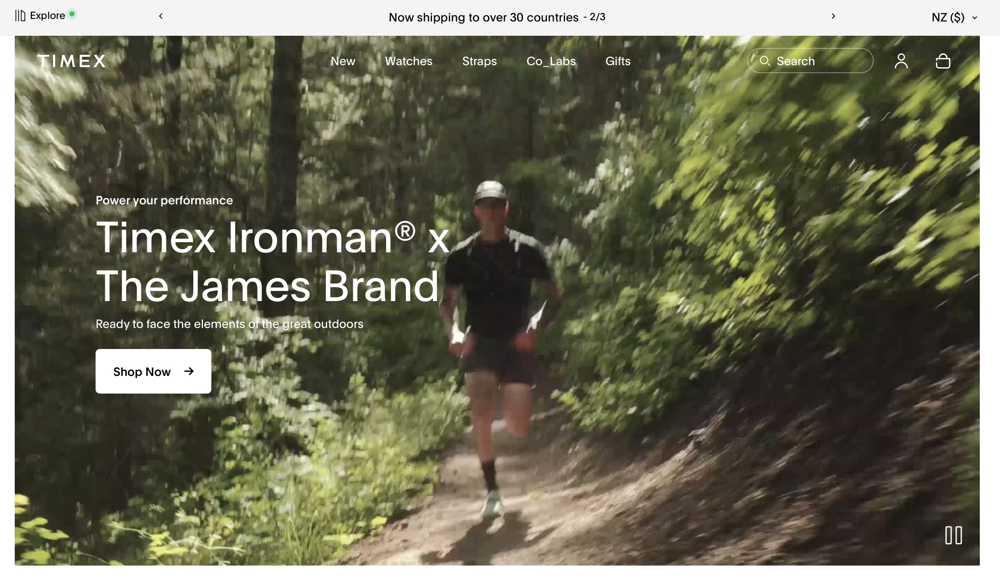

Colour, Typography & GitHub Basics
14th August - 18th August
This tutorial, a sleek and interactive website called Timex, was our site of the week. This website sells watches, is very clean, and uses carefully crafted advertisement-styled videos, showing the user the product's exact purpose. The large images and videos capture the eye, focusing attention on the development. Since my fictional user character desires to sell her artwork, I found this website inspiring and intend to draw inspiration from this class's site of the week.
As the class continued, we were encouraged to give a simple and informal presentation of our work from Assignment 1, which was now complete. Afterwards, we delved right into Assignment 2.1, which is intended to teach us the importance of wireframing and iterating to design the best user outcome. We must do rounds of iterating and create a style guide to maintain consistency.

We were also introduced to GitHub, a version control and collaboration software. This pre-recorded tutorial reiterates vital actions such as making commits, pushing changes to the cloud, and working with branches. I learned the importance of clear documentation, version history and teamwork in coding projects. This comprehensive beginner guide taught me the importance of adequate documentation in software development.